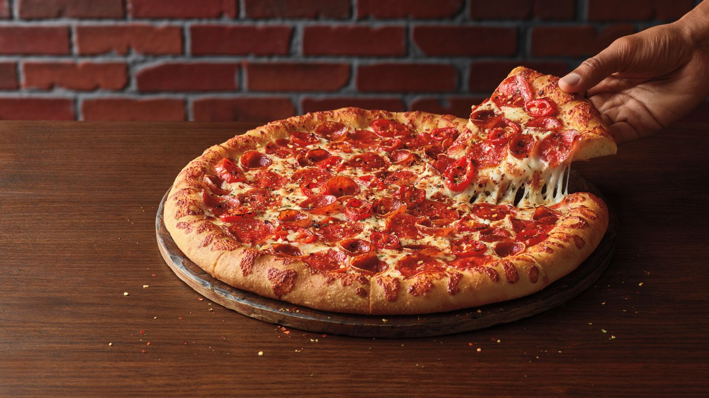

Pizza

Pizza is a popular Italian dish consisting of a usually round, flat base of leavened wheat-based dough
topped with tomatoes, cheese, and often various other ingredients (such as anchovies, mushrooms, onions,
olives, pineapple, meat, etc.), which is then baked at a high temperature, traditionally in a wood-fired oven.
Ingredients
- Wheat-based dough
- Tomatoes
- Cheese
- Various toppings (e.g., mushrooms, onions, olives)
- Prepare Dough: Mix flour, yeast, salt, and water; knead into a smooth dough.
- Roll Dough: Roll out dough into a round shape.
- Add Toppings: Spread tomato sauce, sprinkle cheese, and add desired toppings.
- Bake: Bake in a preheated oven until crust is golden and cheese is melted.
- Serve: Slice and serve hot.